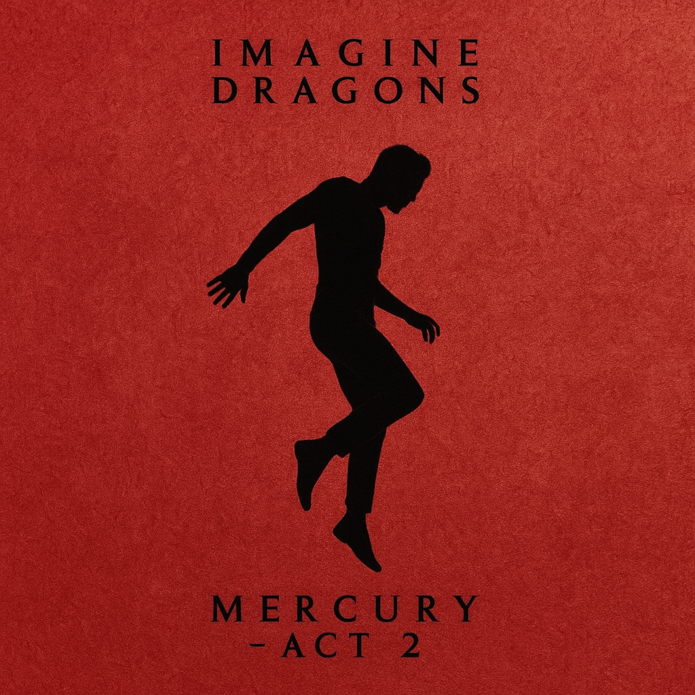

Night Visions
Año: 2012
Incluye hits como "Radioactive", "Demons" y "On Top of the World".
Smoke + Mirrors
Año: 2015
Un sonido más experimental con temas como "Shots" y "Gold".

Evolve
Año: 2017
Incluye éxitos globales como "Believer" y "Thunder".
Origins
Año: 2018
Continuación de *Evolve* con temas como "Natural" y "Bad Liar".

Mercury – Act 1
Año: 2021
Un sonido más emocional y personal. Incluye "Follow You".

Mercury – Act 2
Año: 2022
Cierre del álbum doble con temáticas profundas.